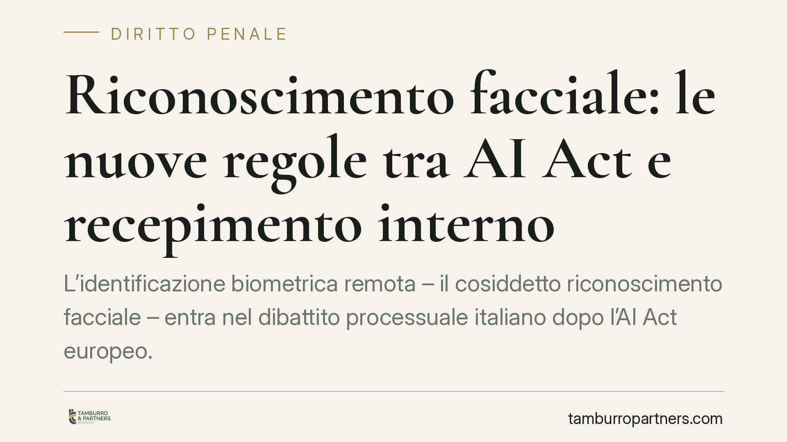

Riconoscimento facciale: le nuove regole tra AI Act e recepimento interno
L'identificazione biometrica remota – il cosiddetto riconoscimento facciale – entra nel dibattito processuale italiano dopo l'AI Act europeo. Il quadro combina un divieto generale con eccezioni per fini di sicurezza e giustizia, subordinate a un'autorizzazione dell'autorità giudiziaria. Ricostruiamo lo stato delle regole, distinguendo il dato normativo certo dalle ricostruzioni ancora in attesa di conferma ufficiale.

Il punto di partenza: l'AI Act
Il Regolamento UE 2024/1689 (cosiddetto AI Act) fissa la cornice. L'art. 5 vieta, come regola generale, l'uso di sistemi di identificazione biometrica remota "in tempo reale" in spazi accessibili al pubblico a fini di attività di contrasto.
Il divieto non è assoluto. La stessa norma prevede eccezioni tassative – ad esempio la ricerca di vittime di reati gravi, la prevenzione di minacce concrete e attuali, la localizzazione o identificazione di soggetti sospettati di reati particolarmente gravi. In questi casi l'uso è consentito solo entro limiti stringenti e, di norma, previa autorizzazione di un'autorità giudiziaria o amministrativa indipendente.
È questo il perno da tenere fermo: il divieto è la regola, l'uso l'eccezione. L'impianto europeo richiede poi un recepimento interno che ne definisca le modalità procedurali concrete.
Il recepimento interno: cosa risulta e cosa va verificato
> Avvertenza sulle fonti. Alcune notizie di stampa riferiscono di un decreto legislativo (indicato come d.lgs. 160/2026) e di un nuovo art. 359-ter c.p.p. che disciplinerebbero l'identificazione biometrica remota a fini preventivi e investigativi, con un meccanismo di autorizzazione affidato al Procuratore della Repubblica o al giudice per le indagini preliminari (GIP). Alla data di redazione questi riferimenti – numero e anno del decreto, esistenza e contenuto dell'articolo, data di entrata in vigore – non risultano verificabili su fonti ufficiali (Gazzetta Ufficiale, Normattiva). Vanno pertanto trattati come schema di decreto o dato in attesa di pubblicazione, non come diritto vigente.
Con questa premessa, la logica che l'AI Act impone al legislatore nazionale è chiara: individuare chi può richiedere l'uso dello strumento (tipicamente polizia giudiziaria e questore), a quali condizioni, e a chi spetta autorizzarlo.
Lo schema del "doppio binario" – autorizzazione del pubblico ministero in alcuni casi, del GIP in altri – è coerente con l'architettura processuale italiana, che già distingue tra atti disposti dal PM e atti riservati al controllo del giudice. Resta però una ricostruzione interpretativa: la sua conferma dipende dal testo effettivo che sarà pubblicato. Un ruolo di controllo è inoltre atteso per il Garante per la protezione dei dati personali e per l'Agenzia per la Cybersicurezza Nazionale (ACN).
Implicazioni pratiche
Le conseguenze variano a seconda del soggetto coinvolto.
Per l'operatore pubblico (forze di polizia, enti che gestiscono sistemi di videosorveglianza evoluta): l'uso di software di riconoscimento facciale non potrà essere né generalizzato né discrezionale. Servirà una base giuridica specifica, una finalità tra quelle ammesse e, verosimilmente, un provvedimento autorizzativo dell'autorità giudiziaria.
Per la difesa, l'attenzione si sposta sulla legittimità dell'acquisizione. Se un'identificazione biometrica è stata effettuata fuori dai casi consentiti o senza l'autorizzazione richiesta, può rilevare un profilo di utilizzabilità del relativo elemento, eccepibile nella sede processuale opportuna.
Per il cittadino, il nodo è il bilanciamento tra sicurezza e riservatezza. La sorveglianza biometrica incide su dati particolarmente sensibili; le garanzie procedurali servono proprio a impedirne un impiego indiscriminato.
Cosa fare in concreto
Per enti, strutture e operatori che trattano o intendono trattare dati biometrici a fini di sicurezza:
- Mappare i sistemi già in uso. Verificare se impianti di videosorveglianza o software installati includano funzioni di riconoscimento facciale, anche non attivate.
- Ricondurre ogni trattamento a una base giuridica e a una finalità ammessa. Escludere usi che eccedano le eccezioni previste dall'AI Act.
- Predisporre la documentazione a supporto (valutazione d'impatto sulla protezione dei dati, registri dei trattamenti), in vista dei controlli del Garante e dell'ACN.
- Monitorare la pubblicazione del decreto di recepimento in Gazzetta Ufficiale, per adeguare procedure interne e catene autorizzative alle regole definitive.
- Formare il personale su limiti d'uso e obblighi di richiesta dell'autorizzazione giudiziaria, quando prevista.
Il quadro è in evoluzione e alcuni riferimenti attendono conferma ufficiale. Ma la direzione è definita dal diritto europeo: il divieto rimane la regola; l'uso, l'eccezione.
---
Contributo informativo a cura di Tamburro & Partners - Avv. Giuseppe Tamburro. Non costituisce parere legale.
Ogni condominio ha una storia a sé.
Se gestisci un'amministrazione e vuoi un confronto su una specifica questione condominiale, scrivi allo studio. Ti rispondiamo entro un giorno lavorativo.